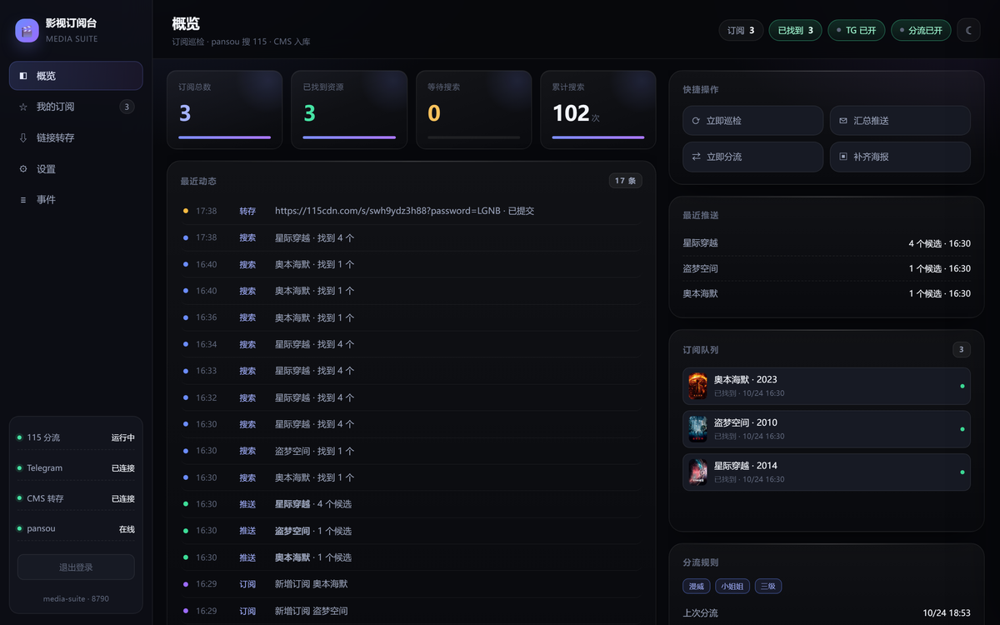
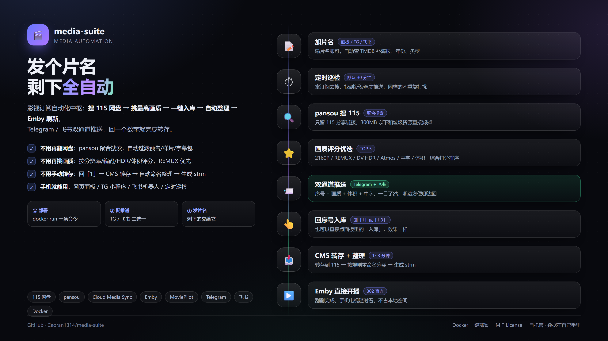
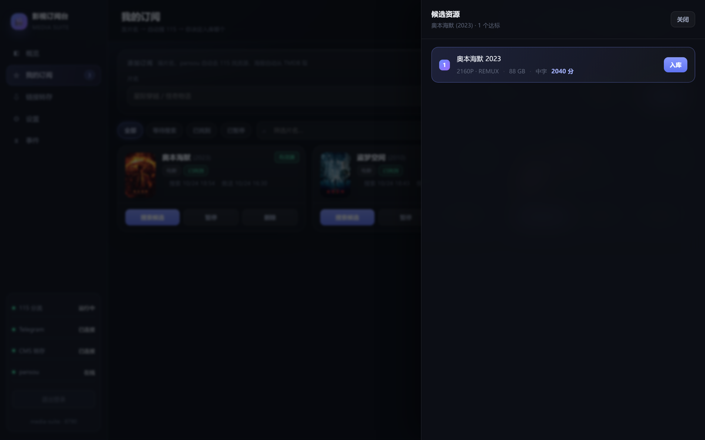
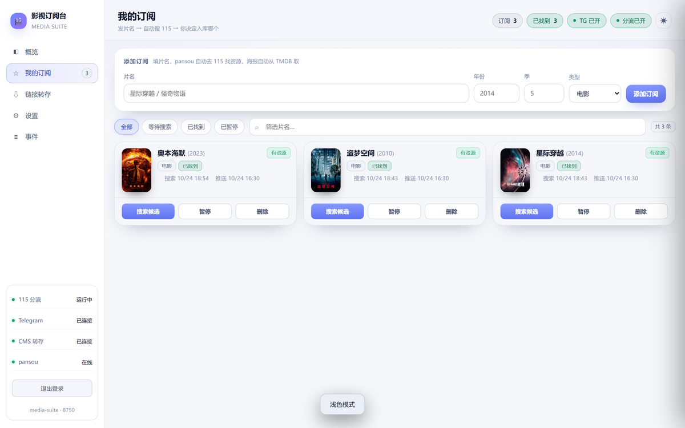

中间的搜索、选种、转存、整理、刷新，面板替你串起来。

概览：服务状态、媒体统计、订阅进度、最近事件

整条链路：发现 → 订阅 → 候选 → 转存 → 入库 → 通知
不追求大而全，只把运营里最费时间的那几件事做顺。
TMDB 热门 / 即将上映聚合，搜片名直接出资源候选，评分、体积、清晰度排序。
电影、剧集订阅；剧集按周自动巡检，有新集就推候选，不用天天盯。
Cloud Media Sync 做重活，或用内置直连 115，不装 CMS 也能跑。
统一命名、生成 strm、通知 Emby 刷新；入库结果回写到订阅进度。
Emby 开号、续期、禁用、媒体库权限；卡密批量生成，买家自助兑换。
正在播放、播放统计、同播超限告警或踢下线；Telegram + 飞书模板通知。
候选按做种/体积/清晰度聚合，点一下就能转存。

白天黑夜都顺眼，手机浏览器也能用。

需要一台能跑 Docker 的 NAS 或小主机，以及 Emby 的 API Key。
# docker-compose.yml
services:
media-suite:
image: caowenrui/media-suite:2.1.0
container_name: media-suite
restart: unless-stopped
ports: ["8790:8790"]
volumes: ["./data:/data"]
environment:
TZ: Asia/Shanghai
EMBY_URL: http://10.0.0.5:8096
EMBY_API_KEY: your-emby-api-key
TMDB_API_KEY: your-tmdb-api-key
先免费用，觉得顺手再升级。永久版一次买断，不再涨价。